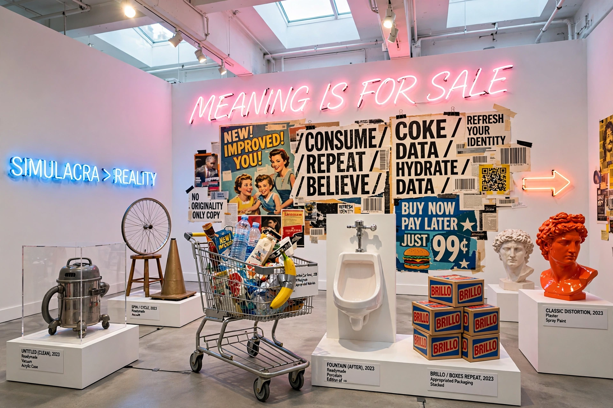

Postmodern art
Postmodern art is a body of art movements that arose in reaction against the ideals and assumptions of modernism. Where modernism pursued purity of medium, originality and universal truths, postmodern art embraces irony, parody, pastiche, pluralism and the mixing of high and low culture. The term is associated with work produced from roughly the 1960s and 1970s onward, though its boundaries remain contested.

| Postmodern art | |
|---|---|
| Period | c. 1960s – present |
| Preceded by | Modernism, abstract expressionism |
| Characteristics | Irony, appropriation, pastiche, pluralism, deconstruction |
| Key figures | Andy Warhol, Cindy Sherman, Jeff Koons, Barbara Kruger, Sherrie Levine |
Characteristics
Postmodern artists frequently question the idea of the author-genius and the unique artwork. Appropriation — re-photographing or re-presenting existing images, as in Sherrie Levine's re-photographs of Walker Evans — challenges notions of originality and copyright. Cindy Sherman's Untitled Film Stills (1977–80) staged the artist as fictional film heroines to expose the constructed nature of identity and media imagery, while Barbara Kruger combined advertising photography with confrontational text ("I shop therefore I am").
Other hallmarks include the return of narrative and figuration after minimalism and conceptual art; the blurring of art, design and commerce in the work of Jeff Koons and Takashi Murakami; and an interest in identity, representation and power informed by feminism, postcolonial theory and deconstruction.
Movements and tendencies
- Pop art (a precursor, especially in Britain and the US)
- Appropriation art and the Pictures Generation
- Neo-expressionism
- Video art and installation art
- Neo-conceptualism and the Young British Artists
- Relational aesthetics and social practice
- Post-internet art
Criticism
Critics have charged postmodern art with relativism, market cynicism and the abandonment of aesthetic judgement. Others argue that its pluralism opened the art world to women, minority and non-Western artists excluded by the modernist canon. Whether postmodernism has ended — succeeded by metamodernism, altermodern or digimodern conditions — remains a live debate.
See also
Recreated from memory as part of the muse-webcrawl project.